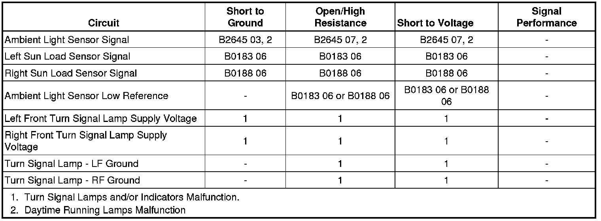

Daytime Running Lamps Malfunction
Daytime Running Lamps Malfunction
Diagnostic Instructions
* Perform the Diagnostic System Check - Vehicle (Initial Inspection and Diagnostic Overview) prior to using this diagnostic procedure.
* Review Strategy Based Diagnosis (Initial Inspection and Diagnostic Overview) for an overview of the diagnostic approach.
* Diagnostic Procedure Instructions (Initial Inspection and Diagnostic Overview) provides an overview of each diagnostic category.
Diagnostic Fault Information

Circuit/System Description
The ambient light sensor is used to monitor outside lighting conditions. The ambient light sensor provides a voltage signal that will vary between 0.2 and 4.9 volts depending on outside lighting conditions. The HVAC control module provides a low reference ground and 5-volt reference signals to the ambient light sensor. The body control module (BCM) monitors the ambient light sensor signal circuit to determine if outside lighting conditions are correct for either daytime running lights (DRL) or automatic lamp control (ALC) when the headlamp switch is in the AUTO position. In daylight conditions the BCM will command the DRLs ON. During low light conditions the BCM will command the low beam headlamps ON. Any function or condition that turns on the headlamps will cancel DRL operation. With the turn signal/multifunction switch in the OFF position, the DRLs which consists of the front turn signal lamps will either be turned ON or OFF after a 30-second delay, depending on whether daylight or low light conditions are sensed by the ambient light sensor.
Diagnostic Aids
Important: This diagnostic procedure assumes that the turn signal lamps are operating within specifications. If the turns signal lamps are inoperative, diagnose the turn signal malfunction before proceeding with the following diagnostic. Refer to Turn Signal Lamps and/or Indicators Malfunction (Turn Signal Lamps and/or Indicators Malfunction) .
Reference Information
Schematic Reference
Headlights/Daytime Running Lights (DRL) Schematics (Headlights/Daytime Running Lights (DRL) Schematics)
Connector End View Reference
Component Connector End Views (Connector Views)
Description and Operation
Exterior Lighting Systems Description and Operation (Exterior Lighting Systems Description and Operation)
Electrical Information Reference
* Circuit Testing (Component Tests and General Diagnostics)
* Connector Repairs (Component Tests and General Diagnostics)
* Testing for Intermittent Conditions and Poor Connections (Component Tests and General Diagnostics)
* Wiring Repairs (Component Tests and General Diagnostics)
Scan Tool Reference
Control Module References (Programming and Relearning)
Circuit/System Verification
Ignition ON, verify with a scan tool the park brake switch parameter displays RELEASED.
If not the specified value, refer to Symptoms - Hydraulic Brakes (Symptoms - Hydraulic Brakes) .
Circuit/System Testing
1. Ignition OFF, disconnect the harness connector at the sunload sensor assembly.
2. Ignition OFF, scan tool OFF, doors CLOSED, test for less than 20.0 ohms between the low reference circuit terminal C and ground.
• If greater than the specified range, test the low reference circuit for an open/high resistance. If the circuit tests normal, replace the HVAC control module.
3. Ignition ON, verify the scan tool ambient light status parameter is INVALID/UNKNOWN.
• If not the specified value, test the signal circuit terminal D for a short to ground. If the circuit tests normal, replace the BCM.
4. Install a 3A fused jumper wire between the signal circuit terminal D and the low reference circuit terminal C. Verify the scan tool Ambient Light status parameter is DAY.
• If the scan tool displays NIGHT, test the signal circuit for a short to voltage or an open/high resistance. If the circuit tests normal, replace the BCM.
5. If all circuits test normal, test or replace the sunload sensor assembly.
Repair Instructions
Perform the Diagnostic Repair Verification (Verification Tests) after completing the diagnostic procedure.
* Sun Load Sensor Replacement (Service and Repair)
* Control Module References (Programming and Relearning) for BCM or HVAC control module replacement, setup, and programming